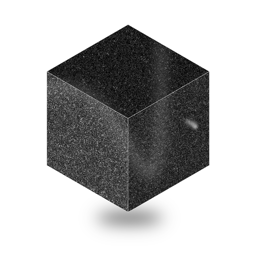

Kodia
An AI code editor built on VS Code.
You bring the models: Kodia talks directly to the providers you configure, or to models running on your machine.

An AI code editor built on VS Code.
You bring the models: Kodia talks directly to the providers you configure, or to models running on your machine.